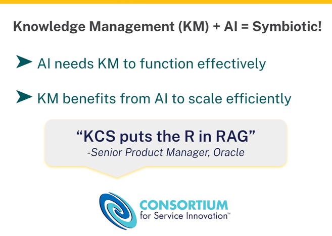

出典: Consortium for Service Innovation, AI Implementation Essentials — ページにクリエイティブ・コモンズの表示なし（© Consortium for Service Innovation）。原文を日本語に翻訳したもの。個人の学習用で、共有しない
元のページ:
AIの取り組みを成功させるための、実績のある手順。

図：「AI Powered by Knowledge（ナレッジを動力とするAI）」のロゴ。白抜きの画像なので、白い背景では見えない。
Consortiumのメンバー企業から直接得られた知見に基づく、AIの取り組みを準備し、立ち上げ、継続的に改善するための要点となる行動。 特定の企業の例は AI Case Studies を参照のこと。
AIが本当の事業価値を届けるには、次のものが必要である。
この指針は、新しいAIソリューションを使えるようにする際に、期待を管理し、成功する成果を得るための確立された方法を示している。
Consortiumのメンバーは、さらに詳しい AI Blueprint の全体を利用できる。
ナレッジマネジメントとAIは、互いの成功を後押しする。よく管理されたナレッジは信頼できるAIの出力を可能にし、AIはナレッジの記録・再利用・改善を加速する。

図：ナレッジマネジメント（KM）+ AI = 共生関係。AIが効果的に機能するにはKMが必要であり、KMはAIによって効率よく規模を広げられる。引用：「KCSは RAG の R（検索）を担う」（Oracle のシニアプロダクトマネージャー）。
KCS^(®) のような規律あるナレッジマネジメントの手法は、AIが引き出すコンテンツが検証され、人が実際に助けを求めるときの言い方に沿っていることを確実にする。その見返りに、AIは記事の下書き、重複の検出、欠落の分析といった作業を効率化し、チームがより価値の高い改善に集中できるようにする。
合わさることで、ナレッジを動力とするAIはフィードバックのループを生み出す。より良いナレッジがより良いAIの成果を生み、AIの機能がそのナレッジを大規模に維持し進化させることを容易にする。
図：AIの継続的改善。準備（Prepare）→ 実行（Execute）→ 改善の繰り返し（Iterate）が8の字のようにつながり、実行の段階は中で何度も回る（利用場面ごとに繰り返す）。
準備と改善の繰り返し*の段階は全体に当てはまる。実行の段階は利用場面ごとに繰り返す。*
新しいAIの導入に飛び込む前に、何を達成しようとしているのかを考えることが欠かせない。
言い換えれば、あなたの利用場面（ユースケース）は何か。
AIソリューションを立ち上げ、継続的に改善する際に、行うこと・考えることのチェックリストとして使ってほしい。これらの行動項目の実践例は AI Case Studies を参照のこと。
戦略を定め、準備状況を評価し、チェンジマネジメントを活用し、利用場面の基準を定めることに時間を投じることで、実行に移るための確かな基盤が築かれ、成功が加速する。
利用場面ごとに、次の手順に従う。
試行は、価値の証明を確立し、信頼を築き、費用のかかる想定外の事態を避けるためにリスクを浮かび上がらせるのに役立つ。AIがより多くのワークフローとやり取りに広がるにつれて、大規模に生じる意図しない結果を見つけて和らげるには、継続的な監督とフィードバックが欠かせない。試作を本番に移して拡大するには、他のどのアプリケーションとも同じガバナンス、管理、サポートが必要である。
継続的な進化によって、AIの取り組みが事業の必要に沿い、混乱に強く、持続的な価値を届けられる状態が保たれる。改善の繰り返しとは、壊れたものを直すことだけではなく、AIへの取り組み方を先回りして強化し、将来に備えることでもある。
Consortiumのメンバーは、業務プロセス、利用場面、業務の変革に焦点を当てた、よく考えられたAI導入の取り組みを続けている。会話に加わろう。
Consortiumのメンバーでログインに助けが必要な場合は、support@serviceinnovation.org に連絡すること。
KCS^(®)の方法論は、Consortium for Service Innovation のサービスマークである。
文書でKCSに初めて言及するときは、上付きの^(®)を付けなければならない。また、次の文を脚注または括弧書きで添えること：「KCS® is a service mark of the Consortium for Service Innovation^(TM).」
KCSは形容詞として使うのが正しい。例えば「[会社名] は KCS® の方法論を支持している……」のように使う。
Consortium for Service Innovation の書面による明示的な許可なく、KCSを提供物の名称に使うことはできない。質問は Consortium へ問い合わせる こと。